プラナの世界 / A LITTLE CORNER OF MY WORLD
01 · ABOUT 02 · ARSENAL 03 · PROJECTS 04 · CONNECT
Một chút code. Một chút âm nhạc. Rất nhiều đam mê.
Building little things that make the everyday a little better.

Mình là Leman (@lemanh1231). Mình đam mê lập trình, xây dựng hệ thống stream âm nhạc, giả lập server game và mày mò tối ưu hóa Android/Linux — từ các công cụ tự động hóa, kiểm thử hạ tầng mạng cho đến giao diện mang phong cách cyber anime.







